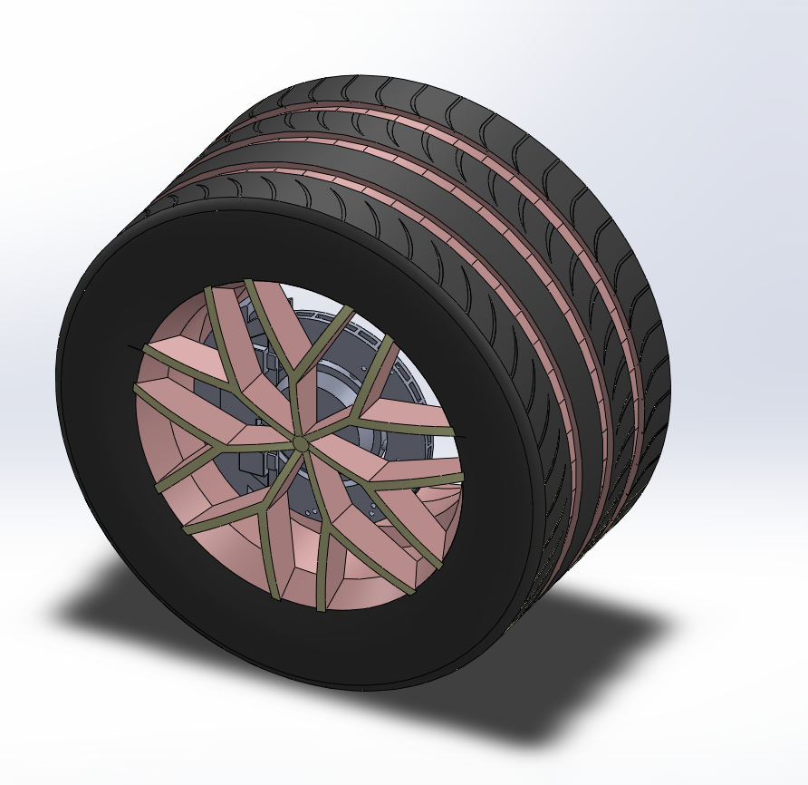
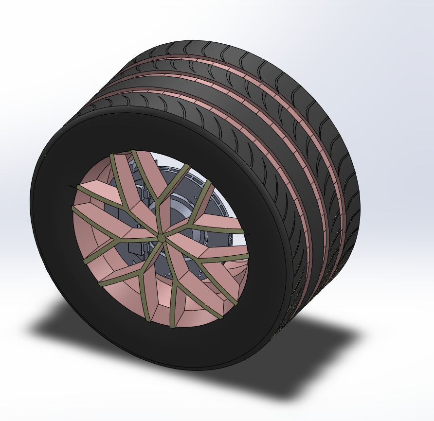

Automotive Tyre CAD Model
A detailed CAD model of an automotive tyre developed in SolidWorks, focusing on tread pattern realism, sidewall geometry, and rim interface accuracy for automotive design applications.
 

Project Overview
- Designed a realistic tyre geometry with accurate tread profiling
- Modeled sidewall curvature and rim interface for assembly compatibility
- Maintained a clean and optimized feature tree for design iteration
- Suitable for visualization, animation, and pre-simulation workflows
Tools & Features Used
- SolidWorks – Part Modeling
- Revolve, Sweep, Circular Pattern
- Fillet and Chamfer for manufacturing realism